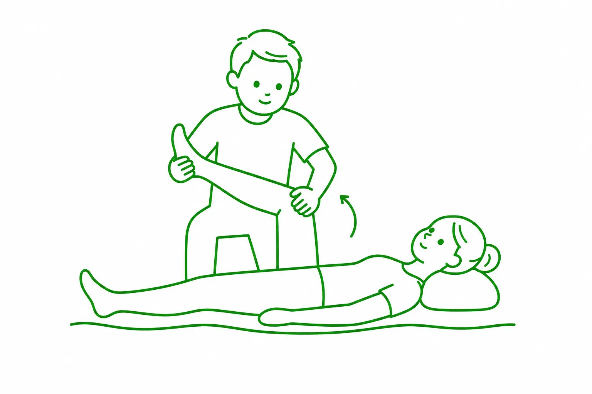

Dyskopatia Gdańsk
Dyskopatia to określenie zmian dotyczących krążków międzykręgowych, które mogą powodować ból oraz ograniczać sprawność w codziennym funkcjonowaniu. Dolegliwości nie zawsze mają taki sam charakter.

Mogą pojawiać się miejscowo w obrębie kręgosłupa, ale także promieniować do kończyn i nasilać się podczas określonych ruchów. W Ośrodku Terapii FiLO prowadzimy fizjoterapię osób z dolegliwościami związanymi z dyskopatią, dobierając sposób postępowania do rodzaju objawów, ich nasilenia oraz aktualnych możliwości pacjenta.
Dyskopatia – przyczyny
Przyczyny dyskopatii mogą być bardzo różnorodne i często wynikają z nakładania się kilku czynników. Istotną rolę odgrywają naturalne procesy związane ze starzeniem się krążków międzykręgowych, które z czasem tracą część swojej elastyczności i zdolność do prawidłowego przenoszenia obciążeń. Znaczenie mają również przeciążenia kręgosłupa, urazy, brak aktywności fizycznej oraz nieprawidłowa technika wykonywania niektórych ruchów. Ryzyko zmian może zwiększać także nadmierna masa ciała, długotrwałe przebywanie w jednej pozycji oraz nieergonomiczne warunki pracy.
Jak objawia się dyskopatia?
Dyskopatia może powodować różnorodne dolegliwości, których charakter zależy m.in. od miejsca występowania zmian. Najczęściej pojawia się ból, który może mieć różne nasilenie i charakter: od tępego po ostry i promieniujący. Towarzyszyć mu mogą mrowienie, drętwienie, kłucie, zaburzenia czucia czy osłabienie siły mięśniowej. Często występuje również ograniczenie swobody ruchów oraz wzmożone napięcie mięśni.
Fizjoterapia jako klucz do łagodzenia objawów dyskopatii – Gdańsk
Łagodzenie objawów dyskopatii w Gdańsku z wykorzystaniem fizjoterapii może przynieść wiele korzyści osobom, którym dolegliwości utrudniają codzienne funkcjonowanie. Odpowiednio prowadzona terapia może pomóc zmniejszyć odczuwany dyskomfort, poprawić sprawność oraz zwiększyć swobodę wykonywania aktywności. Istotne znaczenie ma także ograniczenie ryzyka utrwalania niekorzystnych nawyków ruchowych i stopniowe odzyskiwanie pewności podczas wykonywania różnych czynności. Fizjoterapia może również wspierać powrót do aktywności po okresie nasilenia dolegliwości, pozwalając lepiej dostosować obciążenia do aktualnych możliwości organizmu. Warto pamiętać, że jej celem nie jest wyłącznie doraźne zmniejszenie objawów, ale także poprawa funkcjonowania w dłuższej perspektywie.
Fizjoterapia w celu łagodzenia objawów dyskopatii, Gdańsk – dlaczego my?
W Ośrodku Terapii FiLO tworzymy zespół doświadczonych specjalistów, którzy łączą odpowiednie kwalifikacje z szeroką wiedzą oraz praktycznymi umiejętnościami. Mamy bogate doświadczenie w pracy z pacjentami z różnego rodzaju dolegliwościami i stale rozwijamy swoje kompetencje, aby jeszcze lepiej odpowiadać na ich potrzeby. Do każdego pacjenta podchodzimy z zaangażowaniem, uważnością i pasją do wykonywanego zawodu. Ważna jest dla nas również relacja oparta na zaufaniu i otwartej komunikacji. Chętnie dzielimy się wiedzą, odpowiadamy na pytania i wyjaśniamy kwestie związane z terapią w sposób zrozumiały dla pacjenta. Dbamy o przyjazną atmosferę, w której można czuć się swobodnie i bezpiecznie podczas każdej wizyty. Całości dopełniają komfortowe, nowoczesne gabinety oraz odpowiednio przygotowana przestrzeń naszego ośrodka, sprzyjająca spokojnemu przebiegowi spotkań.
Fizjoterapia przy dyskopatii Gdańsk – ile trwa?
Nie da się jednoznacznie określić, ile powinna trwać fizjoterapia przy dyskopatii w Gdańsku, ponieważ czas potrzebny na osiągnięcie oczekiwanych efektów jest kwestią indywidualną. Znaczenie ma m.in. charakter i nasilenie dolegliwości, ogólny stan pacjenta, jego sprawność oraz reakcja organizmu na podejmowane działania. W niektórych przypadkach poprawa może pojawić się stosunkowo szybko, podczas gdy inne wymagają dłuższej pracy. Istotne jest również zaangażowanie pacjenta poza wizytami i stosowanie się do zaleceń fizjoterapeuty. Na podstawie obserwowanych postępów specjalista może na bieżąco oceniać efekty i dostosowywać dalsze postępowanie.
Potrzebujesz pomocy?
Nie wiesz, która metoda będzie odpowiednia dla Ciebie lub Twojego dziecka? Skonsultuj się z naszym zespołem i dobierz indywidualny plan terapii.
Umów wizytęObszary Metod
Terapie w Gdańsku
Specjalista ds. Fizjoterapii

mgr Olga Długozima
Fizjoterapia DorosłychNajczęściej zadawane pytania
Kiedy z dyskopatią w Gdańsku trzeba najpierw pilnie iść do
lekarza, a nie na fizjoterapię?
+
Niektóre objawy wymagają pilnej konsultacji lekarskiej przed rozpoczęciem fizjoterapii. Należą do nich szybko narastające osłabienie siły w nodze (na przykład opadanie stopy), drętwienie w okolicy krocza i wewnętrznej strony ud oraz problemy z oddawaniem moczu albo stolca. Pilnej wizyty wymaga też ból kręgosłupa po upadku albo wypadku oraz ból, któremu towarzyszy gorączka albo niewyjaśniony spadek masy ciała. Zaburzenia oddawania moczu lub stolca są wskazaniem do natychmiastowej pomocy medycznej. Gdy dyskopatia nie daje takich objawów albo lekarz je wykluczył, w Gdańsku można od razu zgłosić się do nas na fizjoterapię.
Jakie metody stosujemy, gdy dyskopatia utrudnia codzienne
funkcjonowanie?
+
Metody dobieramy po badaniu, w zależności od tego, co w danej chwili najbardziej ogranicza pacjenta. Przy bólu i ograniczonej ruchomości stosujemy terapię manualną: mobilizacje i techniki tkanek miękkich. Gdy dyskopatii towarzyszą mocno napięte mięśnie i punkty spustowe, na przykład w okolicy pośladka przy rwie kulszowej, pomocne bywa suche igłowanie. Efekty utrwalamy treningiem funkcjonalnym, czyli ćwiczeniami dobranymi do pacjenta, które uczą bezpiecznego obciążania kręgosłupa. Uzupełnieniem może być kinesiotaping. Dyskopatia w Gdańsku jest u nas prowadzona przez mgr Olgę Długozimę.
Co zabrać na pierwszą wizytę z dyskopatią w Gdańsku?
+
Najważniejsze są wyniki badań obrazowych kręgosłupa, czyli opis rezonansu, tomografii albo RTG. Jeśli to możliwe, warto mieć też płytę z badaniem. Przydadzą się wypisy ze szpitala lub od lekarzy, informacja o przyjmowanych lekach i krótka notatka o tym, kiedy ból się pojawił i jakie ruchy lub pozycje go nasilają. Dobrze przyjść w wygodnym stroju, który pozwala swobodnie się poruszać. Jeśli pacjent nie ma badań, nie przekreśla to wizyty. Fizjoterapeuta oceni stan na miejscu i powie, czy diagnostyka u lekarza jest potrzebna.